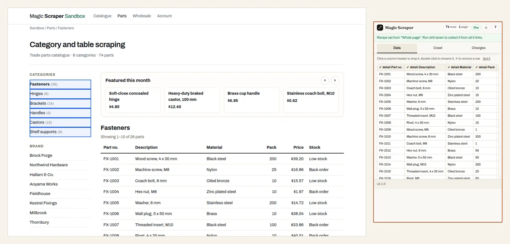

About this practice page
The page most wholesale sites are built on
Parts suppliers, trade counters, B2B shops and most catalogue sites share one layout: categories
down the left with a count beside each, a filter or two under them, a featured strip across the top,
the products as a table in the middle with a pager under it, and a recently-viewed row and a footer
full of links below. Each of those is a list, and each is a list a scraper can take for the data. The
two jobs people actually have are simple to say: this category’s table, every page of it — and
then every category’s, in one sheet, with the category on each row.

From the category list, drill-down with one row per table row: every page of every category, 74 parts, each with its category. Where it goes wrong
Picking the table is the easy part; a table with columns beats a list of short links. The traps
are around it. The featured carousel has its own Next arrow above the table, and a scraper that
takes the first Next on the page clicks through featured products instead of paging the parts. When
the tool picks wrong and you ask for another list, it may offer every row of the table as a
“list” of its six cells before it ever reaches the categories. And going through the
categories, each category’s table has its own pages: Fasteners is three pages, Brackets and Castors
two, the others one. Reading the first page of each gets 52 parts of 74 and looks finished.
In Magic Scraper
It opens on the parts table, and Start crawling pages it by its own pager — 26 fasteners
from three pages, the carousel left alone. For every category: open Wrong list? →
Another table until the category list is outlined (six rows, with the counts), then on the
Crawl tab turn on drill-down , preview the first category, tick Every row of
its table — one row each and run it. It opens each category, reads its parts table one row per
part, follows that table’s own pages, and keeps the category’s name and link on every row: 74
rows. Reading every category is a Pro feature; the free version reads the first three so you can see
the result.
In Python
Take the categories from the sidebar, then page each one by the pager under its table:
import requests, pandas as pd
from io import StringIO
from urllib.parse import urljoin
from bs4 import BeautifulSoup
start = "https://magicscraper.app/demo/parts"
soup = BeautifulSoup(requests.get(start).content, "html.parser")
categories = [(a.get_text(strip=True), urljoin(start, a["href"])) for a in soup.select("ul.categories a")]
frames = []
for name, url in categories:
while url:
page = BeautifulSoup(requests.get(url).content, "html.parser")
df = pd.read_html(StringIO(str(page.select_one("table.partlist"))))[0]
df.insert(0, "Category", name)
frames.append(df)
nxt = page.select_one(".pager a.next") # the table's pager, not the carousel
url = urljoin(url, nxt["href"]) if nxt else None
parts = pd.concat(frames, ignore_index=True)
parts.shape # (74, 7)A correct result
This category: 26 rows, FX-1001 to FX-1026, six columns (Part no., Description, Material, Pack,
Price, Stock). Every category: 74 rows with a category on each — 26 Fasteners, 8 Hinges, 14
Brackets, 5 Handles, 12 Castors and 9 Shelf supports — and every part number different. If you
have 52, the second and third pages of the longer categories were missed.
Try it yourself: get Magic Scraper free and open it on this page.